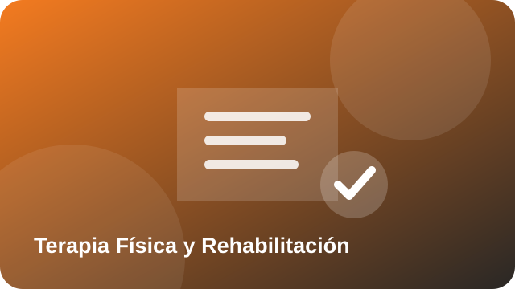

Educación
Encuentra tu carrera.
Conoce las áreas académicas de la Universidad Autónoma del Perú. La oferta puede variar según la modalidad.
Educación
- Educación Primaria
- Educación Inicial
- Educación Física y Gestión del Deporte
Gestión y Comunicaciones
- Administración de Empresas
- Administración y Marketing
- Administración y Negocios Internacionales
- Ciencias de la Comunicación
- Diseño Gráfico Digital y Publicitario
- Administración y Finanzas
- Contabilidad
- Administración de Servicios de la Salud
- Administración y Negocios Digitales
Ciencias de la Salud
- Medicina Humana
- Optometría
- Laboratorio Clínico y Anatomía Patológica
- Farmacia y Bioquímica
- Obstetricia
- Nutrición y Dietética
- Enfermería
- Psicología
- Terapia Física y Rehabilitación
Derecho
- Derecho
Ingeniería y Arquitectura
- Arquitectura
- Ingeniería Ambiental
- Ingeniería Civil
- Ingeniería Mecatrónica
- Ingeniería de Sistemas
- Ingeniería Industrial
- Ingeniería de Software
- Ingeniería en Ciberseguridad
- Ingeniería en Inteligencia Artificial
CONOCE CADA OPCIÓN
Todas nuestras carreras
Educación
Educación Inicial
Educación
Educación Física y Gestión del Deporte
Gestión y Comunicaciones
Administración de Empresas
Gestión y Comunicaciones
Administración y Marketing
Gestión y Comunicaciones
Administración y Negocios Internacionales
Gestión y Comunicaciones
Ciencias de la Comunicación
Gestión y Comunicaciones
Diseño Gráfico Digital y Publicitario
Gestión y Comunicaciones
Administración y Finanzas
Gestión y Comunicaciones
Contabilidad
Gestión y Comunicaciones
Administración de Servicios de la Salud
Gestión y Comunicaciones
Administración y Negocios Digitales
Ciencias de la Salud
Medicina Humana
Ciencias de la Salud
Optometría
Ciencias de la Salud
Laboratorio Clínico y Anatomía Patológica
Ciencias de la Salud
Farmacia y Bioquímica
Ciencias de la Salud
Obstetricia
Ciencias de la Salud
Nutrición y Dietética
Ciencias de la Salud
Enfermería
Ciencias de la Salud
Psicología

Ciencias de la Salud
Terapia Física y Rehabilitación
Derecho
Derecho
Ingeniería y Arquitectura
Arquitectura
Ingeniería y Arquitectura
Ingeniería Ambiental
Ingeniería y Arquitectura
Ingeniería Civil
Ingeniería y Arquitectura
Ingeniería Mecatrónica
Ingeniería y Arquitectura
Ingeniería de Sistemas
Ingeniería y Arquitectura
Ingeniería Industrial
Ingeniería y Arquitectura
Ingeniería de Software
Ingeniería y Arquitectura
Ingeniería en Ciberseguridad
Ingeniería y Arquitectura
Ingeniería en Inteligencia Artificial
Listado basado en la oferta publicada en el sitio oficial. Revisa allí la disponibilidad por modalidad y campus.
Ver oferta oficial